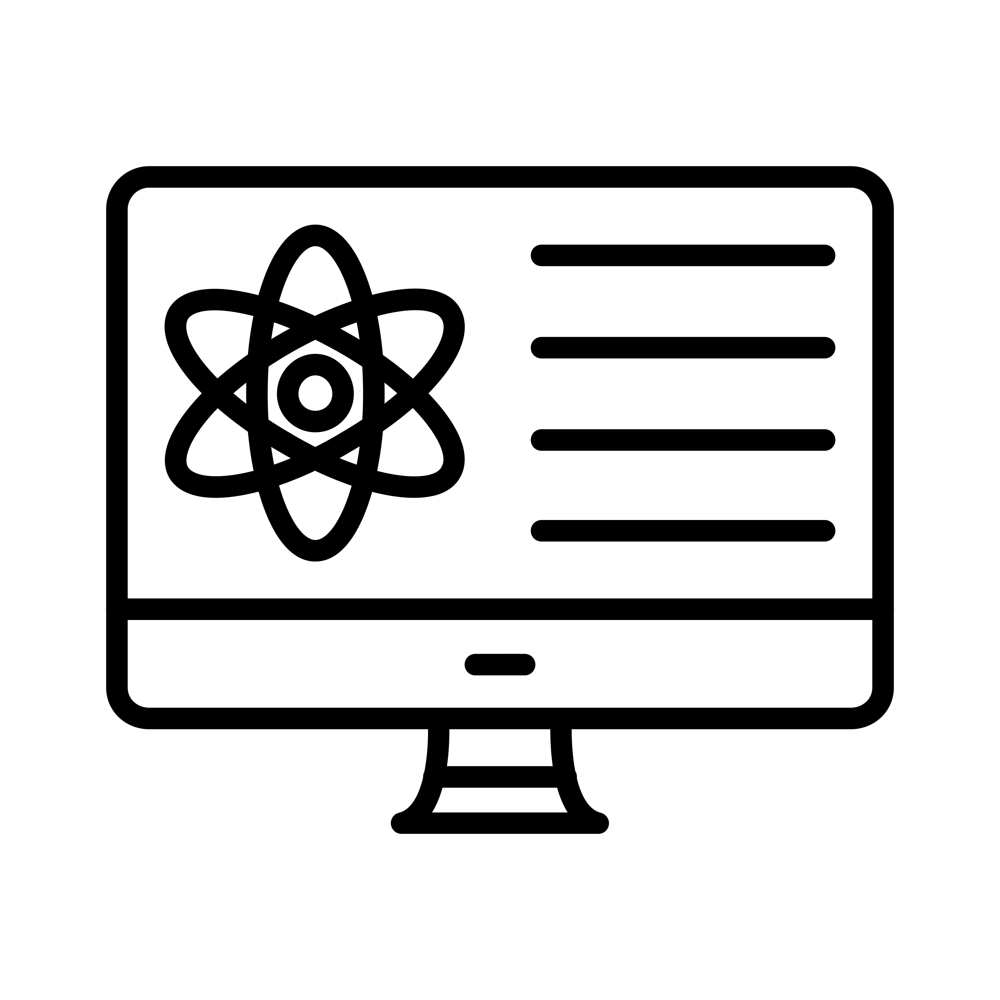

FAIR Data Management Workshop

Overview
Join us for an intensive workshop on FAIR data principles and their practical implementation in research workflows. Learn best practices for making your research data Findable, Accessible, Interoperable, and Reusable. This hands-on session will cover metadata standards, data repositories, and documentation strategies.
Workshop Objectives
This comprehensive workshop is designed to equip researchers and data managers with the knowledge and practical skills needed to implement FAIR principles in their daily research activities. By the end of this workshop, participants will:
- Understand the core concepts of FAIR data principles
- Learn how to create effective metadata using standard schemas
- Discover best practices for organizing and documenting research data
- Explore various data repository options and selection criteria
- Gain hands-on experience with data management tools and platforms
- Develop strategies for long-term data preservation
Workshop Agenda
Session 1: Introduction to FAIR Principles (9:00 AM - 10:30 AM)
An overview of FAIR data principles, their importance in modern research, and real-world examples of FAIR data implementation across different disciplines.
Session 2: Metadata Standards and Best Practices (11:00 AM - 12:30 PM)
Deep dive into metadata schemas, controlled vocabularies, and documentation standards. Hands-on exercises using common metadata tools and templates.
Lunch Break (12:30 PM - 1:30 PM)
Session 3: Data Repositories and Publishing (1:30 PM - 3:00 PM)
Exploration of different data repository options, understanding repository selection criteria, and practical demonstration of data upload and DOI assignment.
Session 4: Practical Implementation and Q&A (3:30 PM - 5:00 PM)
Participants work on their own datasets with expert guidance, followed by group discussion and Q&A session addressing specific research data challenges.
Who Should Attend
This workshop is ideal for:
- Researchers at all career stages who work with research data
- PhD students beginning their research projects
- Data managers and data stewards
- Research support staff and librarians
- IT professionals involved in research data infrastructure
- Anyone interested in improving their data management practices
Registration Information
Date: February 15, 2025
Time: 9:00 AM - 5:00 PM
Location: Hybrid format - Available both online (Zoom) and on-site at
FAIRspace Cologne
Registration Fee: Free for affiliated institutions, €50 for external
participants
Registration Deadline: February 8, 2025
Note: Limited seats available for on-site participation (maximum 30 participants). Online participation is unlimited. Participants will receive a certificate of attendance.
Prerequisites and Materials
No prior experience with FAIR principles is required, though basic familiarity with research data management concepts is helpful. Participants are encouraged to bring:
- A laptop with internet connection
- Sample dataset from their own research (optional but recommended)
- Questions or specific challenges they face with data management
All workshop materials, including presentation slides, handouts, and exercise templates, will be provided digitally to all registered participants.
Instructors
The workshop will be led by experienced data management professionals from FAIRspace Cologne and guest speakers from leading research institutions. Our instructors have extensive practical experience implementing FAIR principles across various research domains.
Contact Information
For questions about the workshop content, registration, or technical requirements, please contact us at:
Email: workshops@fairspace-cologne.de
Phone: +49 (0)221 478-0000